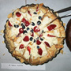
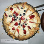

Purpose
Moving to a new place can be exciting. But also stressful maybe, especially when we are unsure about some details, and don't know anyone yet in the place we're moving to.
The International Student Welcome (ISW) is our answer to this - to offer friendship and support for international students arriving at Cambridge University for the first time. It is organised by friendly students who already know Cambridge well and who are willing to solve those important little (and big) questions with answers that aren't always easy to find on your own.
A friendly face: One part of ISW this year is the ISW volunteers who will meet you at Cambridge bus station from 24th September 2015 to 4th October 2015 and at Cambridge railway station every day from 26th September 2015 to 4th October 2015. The volunteers will help you to locate your college, and we can put you in touch with other students in your college who would also be happy to welcome you.
Special events: We have also organized a number of afternoon and evening events (check our events page for details) where you can meet both freshers like you as well as senior students. This is a great opportunity to make friends as well as to explore the University and its college life before you settle down for the term.
International Student Welcome is organised by the Christian Graduate Society to provide a service to all newly-arriving international students.
We look forward to meeting you!
Parousia Rockstroh
PhD Student
Homerton College
Chairman of the ISW committee, 2015
You can send a message to the team using the form on our contact page. We recommend that you get in touch if you are about to come to study in Cambridge and use the form to let us know when you are arriving.
If you are a current Cambridge student or resident and interested in volunteering to help with the ISW programme, you can contact us here.
Areas where we can and cannot help you
Before deciding whether or not to contact us, you may find it useful to know what areas we can and cannot help with. The ISW team will be happy to assist you in any way it can, but there are unfortunately some areas where our ability to do so is very limited, and you may wish to look elsewhere for help. If in doubt, we are always happy to point you in the right direction.
What we can do for you: When you arrive in Cambridge, we can show you where you need to go from there. We can help you find out further information about your college or accommodation that you may need, and living in Cambridge ourselves we can tell you a lot of general day-to-day things about living and working here, such as where certain shops are, what things cost or how to get around town. A lot of useful information can be found on our Frequently Asked Questions and Links pages, so check if your question is already answered there.
What we can't do for you: We cannot offer academic advice. Questions about which courses to take or what study options would work best for you are best directed to academic staff in the relevant departments. Contact details for various university and college staff can be found here. We are also unable to advise about scholarships and funding, and would again direct you to the relevant staff in your own colleges and departments, although some information about graduate funding can be found here.

 
